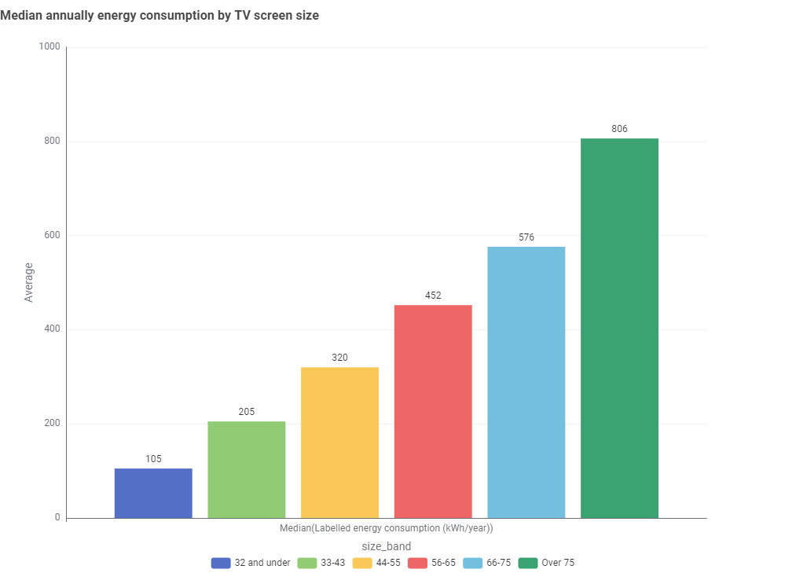
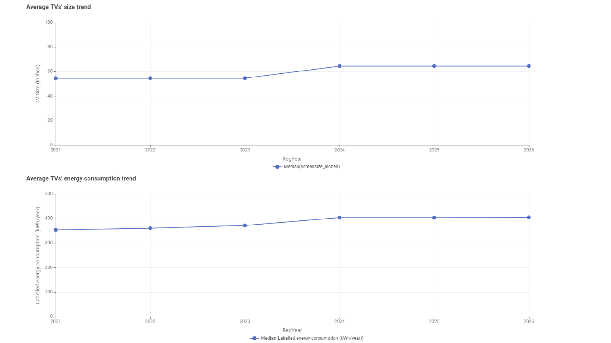
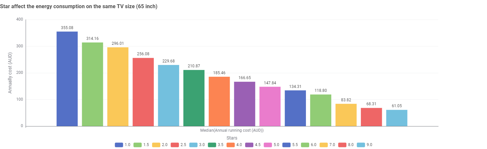

Televisions
TV size drives energy use. The star label saves you money.
The typical TV on the Australian register costs about $129 a year to run. That figure is rising because screens keep getting bigger. We looked at all 5,340 TV models on the Australian Energy Rating register to answer three questions.
-
Screen size
Does size matter?
A TV over 75 inches uses almost eight times the energy of one 32 inches or under.
-
Trend
Are TVs getting bigger?
The typical new TV jumped from 55 to 65 inches in 2024.
-
Star rating
What can you do?
A 6-star 65-inch TV costs about $178 a year less to run than a 2-star one.
Costs assume 0.33 AUD/kWh and 10 hours of use a day, the basis of the energy label.
Bigger screens use more electricity
Screen size is the biggest single driver of a TV's energy use. Across 5,340 models on the Australian register, the median TV of 32 inches or less uses 105 kWh a year. Above 75 inches, the median is 806 kWh, almost eight times as much.
| Screen size | Median energy use |
|---|---|
| 32" and under | |
| 33–43" | |
| 44–55" | |
| 56–65" | |
| 66–75" | |
| Over 75" |
See the original visual

And new TVs keep getting bigger
In 2024 the typical newly registered TV jumped from 55 to 65 inches. Median energy use rose 14%, from 354 kWh in 2021 to 405 kWh in 2026. Star ratings improved a little over the same period, but not enough to cancel out the bigger screens.
Years are estimated from label expiry dates; 2026 is a partial year (dashed).
See the original visual

The star label is how you save
You don't have to give up a big screen. Two 65-inch TVs can cost very different amounts to run. A 2-star model costs about $296 a year, and a 6-star model about $118. That's a saving of about $178 a year, or roughly $1,780 over a ten-year life. Try other screen sizes and your own electricity price in the chart below.
| Star rating | Median yearly running cost |
|---|
See the original visual

Use the calculator below to check a TV you own, or one you are thinking of buying.
TV energy calculator
Pick a TV from the Australian register, or enter its power in watts. Then tell us how long it is on each day and what you pay for electricity. Results update as you type.
Your estimate
| Period | Energy | Cost |
|---|---|---|
| Per day | ||
| Per month | ||
| Per year |
Model data: Australian Energy Rating register (extract dated 3 Oct 2026).